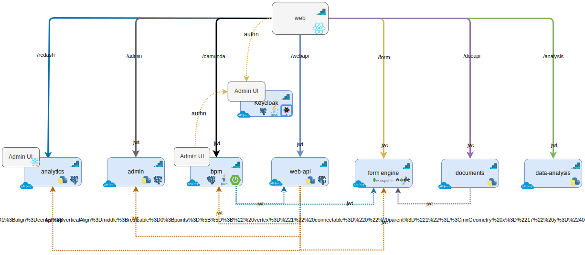

<article class="docs-article" id="section-1">
    <section class="docs-section">
        <div>
            <h1 class="docs-heading">System Architecture</h1>
            <br>
            <hr>
            <br>

            
            <br><br>

            <h3 id="components">Components</h3>
            <p>
                The formsflow.ai platform is composed of several modular components that work together to provide 
                form management, workflow automation, data analysis, and user management capabilities. Below is 
                a brief overview of each component.
            </p>

            <!-- Web / UI -->
            <h4 id="formsflow-ui">Web</h4>
            <p>
                The <strong>Web</strong> component is a browser-based React application that integrates 
                forms, workflow, and analytics into a unified user interface. Most daily end-user 
                operations—such as submitting forms, reviewing tasks, and analyzing data—are handled here. 
                This application is architected using micro frontends, where each module is deployed 
                independently and served from an S3 bucket. The formsflow.ai Web layer communicates with 
                other platform services via native APIs, secured through OIDC or API keys.
            </p>

            <!-- Keycloak -->
            <h4 id="keycloak-identity-management-server">Keycloak</h4>
            <p>
                <strong>Keycloak</strong> provides identity and access management (IAM) for the formsflow.ai 
                platform. It ensures a single sign-on (SSO) experience and centralized authorization 
                management. While formsflow.ai can provision a default Keycloak server for local development 
                and testing, you may also integrate the platform with an existing Keycloak instance in your 
                environment.
            </p>

            <!-- Form.io -->
            <h4 id="form-io">Form Engine</h4>
            <p>
                The <strong>Form Engine</strong> is powered by form.io and exposes a REST API for form 
                creation, submission, and management. formsflow.ai uses a custom authentication flow to 
                enable seamless user access to the forms, leveraging Keycloak for user verification.
            </p>

            <!-- BPM -->
            <h4 id="bpm">BPM Engine</h4>
            <p>
                The <strong>BPM (Business Process Management) Engine</strong> is built on a 
                customized Camunda (embedded in a Spring Boot application). It offers both a REST interface 
                and a built-in Camunda console for process definition, task management, and workflow 
                orchestration.
            </p>

            <!-- Web API -->
            <h4 id="web-api">Web API</h4>
            <p>
                The <strong>Web API</strong> is a custom REST service that correlates form submissions with 
                corresponding workflow instances. It stores and manages metadata around each submission, 
                enabling key features such as authorization and filtering across the platform.
            </p>

            <!-- Analytics -->
            <h4 id="analytics">Analytics</h4>
            <p>
                The <strong>Analytics</strong> component is based on a customized Redash application, 
                providing both a REST interface and an admin console for configuring data sources, queries, 
                and dashboards. These dashboards—either public or private—are automatically displayed 
                in formsflow.ai, with access controlled by user permissions.
            </p>

            <!-- Data Analysis -->
            <h4 id="data-analysis">Data Analysis</h4>
            <p>
                The <strong>Data Analysis</strong> service provides additional data-driven functionalities 
                such as sentiment analysis and AI-assisted form generation. It is exposed through a 
                custom REST API.
            </p>

            <!-- Documents API -->
            <h4 id="documents-api">Documents API</h4>
            <p>
                The <strong>Documents API</strong> is responsible for generating PDF representations of 
                form submissions. It can render fully formatted PDFs based on the form itself, or use 
                custom templates for more advanced document generation needs.
            </p>

            <!-- Admin API -->
            <h4 id="rest-api">Admin API</h4>
            <p>
                The <strong>Admin API</strong> is a Python-based REST service that manages tenant provisioning 
                in multi-tenant deployments. This functionality enables rapid onboarding and isolation for 
                multiple tenants within a single formsflow.ai environment.
            </p>

        </div>
    </section>
</article>